바이브 코딩이 남기는 쓰레기 코드
'바이브 코딩'이라는 말을 만든 사람조차 에이전트가 짜는 코드를 좋아하지 않아요. 영상은 Andrej Karpathy가 남긴 글로 시작해요. 노란 형광펜이 칠해진 부분은 "코드 품질이 마음에 안 든다", "에이전트는 추상화를 부풀리고 코드 미감이 떨어진다"예요. 그 아래로는 AGENTS.md에 아무리 지시를 써도 듣지 않는다는 하소연이 이어져요.
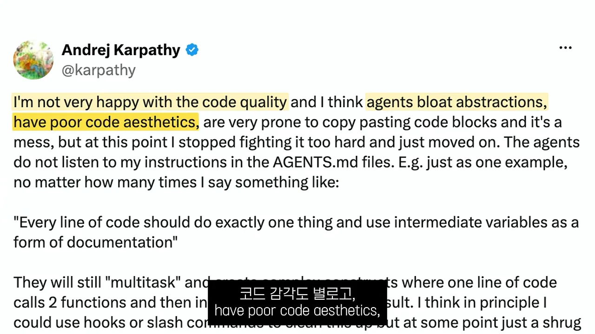
발표자가 꼽는 증상은 이래요. 코드 블록을 복사해 여기저기 붙이고, 잘못된 가정을 하고는 그대로 밀고 나가요. 안 쓰는 코드를 남기고, 100줄이면 될 일을 1,000줄로 써요. 아래 그림이 그 장면이에요. 왼쪽의 작은 요청 하나에서 가지가 뻗어 config, factory, interface, function 파일이 생기고, 맨 아래 function에는 test 파일이 세 장이나 더 붙어 있어요.
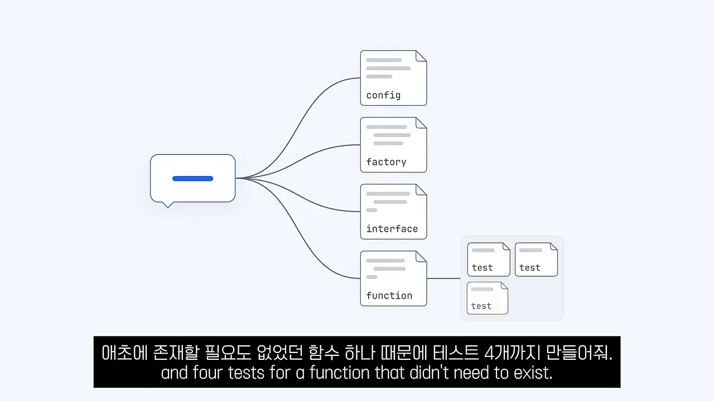
틀린 코드보다 슬롭이 더 골치 아픈 이유
이렇게 쏟아져 나온 저품질 생성물을 요즘 슬롭이라고 불러요. 망가진 코드는 쉬워요. 찾아서 고치면 끝이에요. 슬롭 코드는 컴파일되고 테스트도 통과하고, 대충 요청한 일도 해요. 아래 그림에서 문서 더미가 compile 관문(체크 표시)과 test 관문을 모두 지나가는 게 그 뜻이에요. 문제는 그 코드가 애초에 필요했는지, 그렇게 복잡해야 했는지예요.
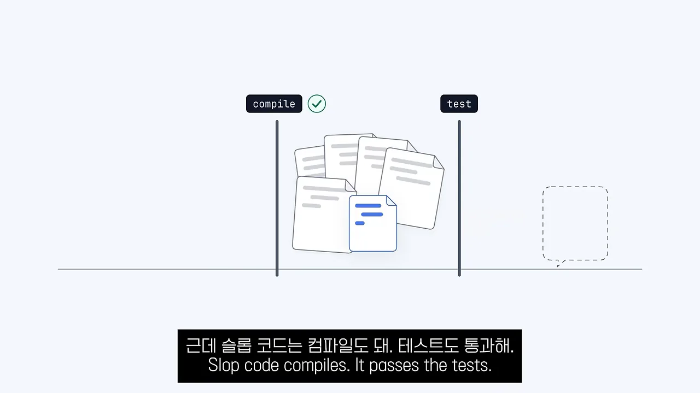
그래서 결국 한 줄씩 읽어야 해요. 안 읽고 배포하면 무엇이 들어 있는지 모른 채 내보내는 찜찜함이 남아요. 모델은 그 코드를 9초 만에 쓰지만, 내 이름을 걸려면 그만큼 이해해야 해요.
발표자는 리뷰가 작성보다 늘 어렵다고 말해요. 직접 짜면 타이핑하는 동안 머릿속에 구조가 쌓여요. AI가 짜면 그 과정이 없어요. 그래서 리뷰어는 아무도 내리지 않은 결정을 거꾸로 추적해야 해요. 이 영상의 나머지는 그 부담을 줄이는 네 가지 도구 이야기예요.
답변부터 짧게: Attention Span
발표자는 AI를 '더하는 기계'라고 불러요. 화면에도 AI 딱지가 붙은 커다란 더하기 버튼이 나와요. 무언가를 개선해 달라고 하면 유지보수할 게 늘어나고, 버그를 설명해 달라고 하면 텍스트 벽이 돌아와요. "You are absolutely right" 같은 Claude 특유의 말버릇도 같은 증상으로 봐요.
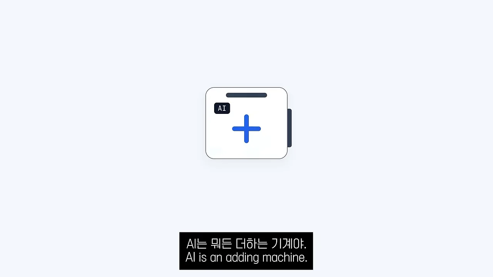
설치는 2분
첫 번째 도구 Attention Span은 에이전트가 어떻게 답할지 정해 두는 마크다운 파일 모음이에요. Claude Code에서는 출력 스타일로 설치해요. Codex나 OpenCode에서는 아래 그림처럼 AGENTS.md가 style.md를 가리키게 링크 한 줄만 넣으면 돼요.
들어 있는 스타일은 세 가지예요.
| 스타일 | 어떻게 답하나요 | 언제 쓰나요 |
|---|---|---|
| Spartan | 군더더기 없는 날것의 답 | 정말 짧은 답만 원할 때 |
| Rundown | 체크리스트가 들어간 정리 | 진행 상황을 보고받을 때 |
| Attention-kind | 답부터 먼저, 그다음 훑어볼 수 있는 짧은 요점 | 발표자가 평소에 쓰는 스타일 |
같은 질문, 다른 답
발표자는 "새 소셜 앱에 PostgreSQL과 MongoDB 중 뭘 써야 할까?"라고 물어요. 스타일을 켜지 않은 답은 'BEFORE' 카드처럼 문단 하나가 끝없이 이어져요. 관계형 데이터가 많다는 이유, MongoDB의 한계, 피드 문제가 쉼표로 줄줄이 붙어 있고 카드 밖으로까지 넘쳐요.
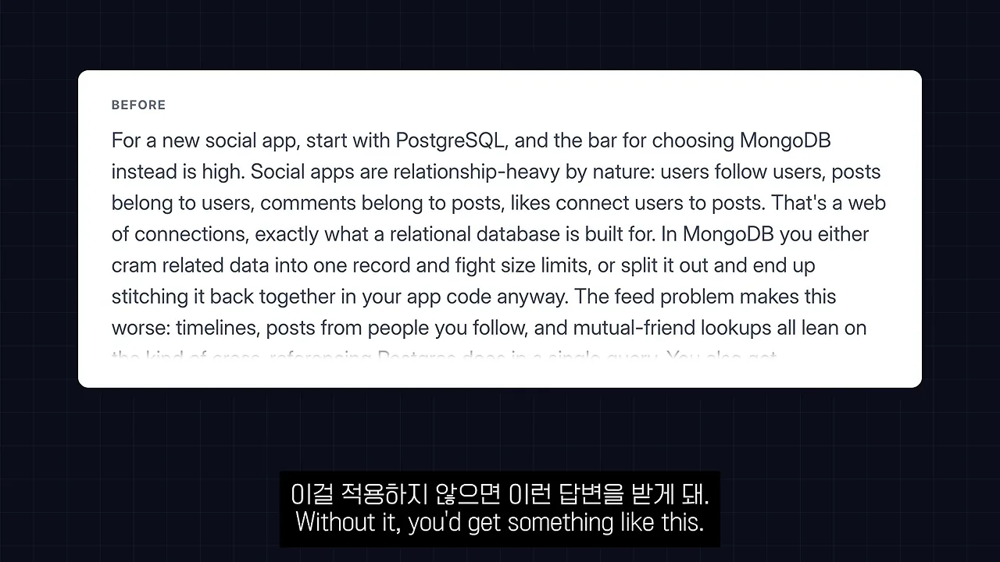
Attention-kind를 켜고 같은 질문을 하면 'AFTER' 카드가 나와요. 맨 위 줄에 "Use PostgreSQL"이라는 결론이 먼저 오고, 그 아래 화살표 다섯 줄이 유연성, MongoDB를 고를 때, 초기에 빠지기 쉬운 함정, 다음 할 일로 나뉘어 있어요. 400단어가 넘던 답이 94단어로 줄었어요.

짧은 답이 왜 중요할까요? 발표자는 이걸 켠 뒤로 AI와 하는 계획 세션이 훨씬 나아졌다고 해요. 구현 계획을 끝까지 지치지 않고 읽을 수 있게 됐거든요. 아래 그림처럼 'PLAN' 문서가 'CODE'로 넘어가기 전, 그 사이가 슬롭을 코드가 되기 전에 잡을 수 있는 자리예요.
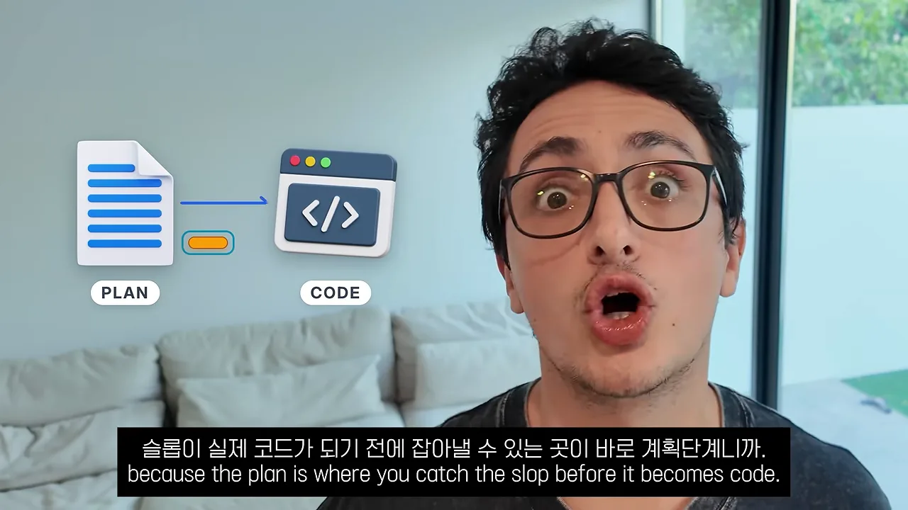
덜 만들게 하는 파일 한 장: Karpathy Skills
Attention Span이 AI의 말투를 고친다면, 이번엔 코드 쪽이에요. 누군가 Karpathy의 불평, 그러니까 잘못된 가정, 안 쓰는 코드, 100줄이면 될 1,000줄을 그대로 파일 하나로 옮겼어요. 이름은 andrej-karpathy-skills예요. 아래 저장소 화면 오른쪽 About 칸에 "A single CLAUDE.md file to improve Claude Code behavior"라고 적혀 있고, 그 아래 별이 215.4k예요.

CLAUDE.md를 열면 번호 붙은 제목이 보여요. 화면에는 1. Think Before Coding과 2. Simplicity First까지 나와 있고, 각 제목 아래 굵은 한 줄 요약과 짧은 목록이 붙어 있어요. 이런 마크다운 파일 하나가 전부예요.
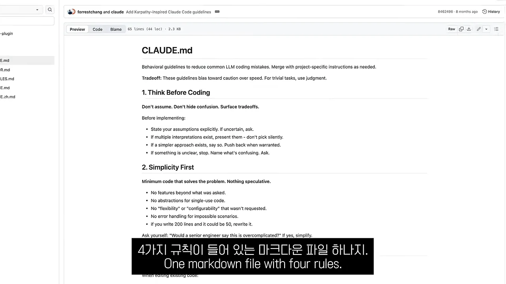
영상이 소개한 규칙
| 규칙 | 영상에서 설명한 내용 |
|---|---|
| Think Before Coding | 추측하지 말아요. 요청이 모호하면 몰래 하나를 고르지 말고 선택지를 드러내요. |
| Simplicity First | 문제를 고치는 줄만 바꿔요. 기존 스타일에 맞추고 나머지는 건드리지 않아요. |
| Goal-Driven Execution | 할 일을 지시하지 말고 성공 기준을 줘요. |
발표자는 네 번째 규칙을 Karpathy 자신의 조언이라며 가장 길게 설명해요.
Don't tell it what to do. Give it success criteria.
무엇을 하라고 말하지 말고, 성공 기준을 주세요.
— 영상 03:17
예를 들면 "로그인 버그 고쳐" 대신 "버그를 재현하는 테스트를 쓰고, 그 테스트를 통과시키고, 다른 게 깨지지 않았는지 확인해"라고 하는 거예요. 첫 화면은 출발점이에요. 왼쪽 'LOGIN' 카드에 빨간 X, 오른쪽 'TEST' 카드에 'FAIL'이 붙어 있어요. 버그를 재현하는 테스트가 먼저 실패하는 상태예요.
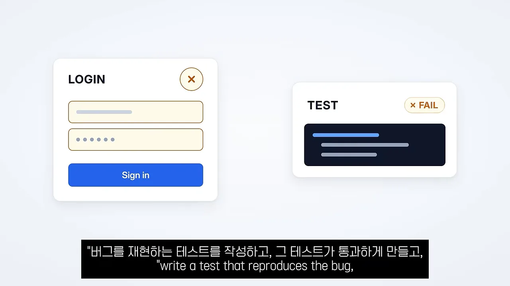
다음 화면에서는 두 카드 사이에 파란 순환 화살표가 생기고, 'LOGIN'에 초록 체크, 'TEST'에 'PASS'가 붙어요. 그 아래 Other tests 칸도 'PASS'예요. 모델은 확인할 수 있는 목표만 있으면 거기에 닿을 때까지 고치고 돌리기를 반복하는 데 아주 능해요.
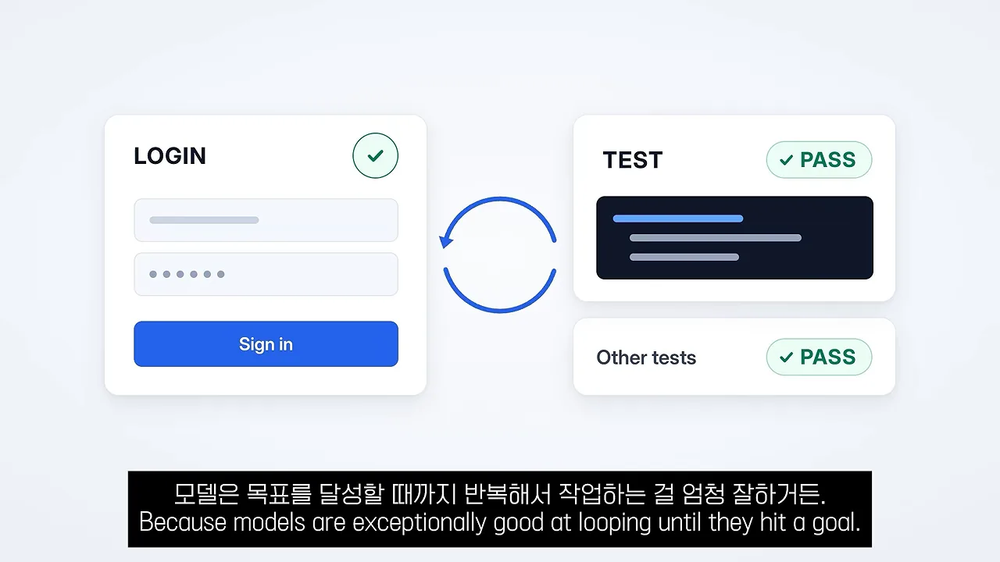
설치는 README의 Install 절을 따르면 돼요. 노란 칸 두 줄이 Claude Code 플러그인으로 설치하는 명령이에요. 발표자는 파일만 내려받아 프로젝트에 넣어도 된다고 덧붙여요.
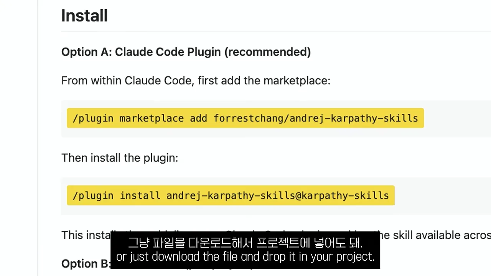
/plugin marketplace add forrestchang/andrej-karpathy-skills
/plugin install andrej-karpathy-skills@karpathy-skills무시할 수 없는 규칙: anti-slop
여기서 발표자는 마크다운 파일의 한계를 짚어요. 아래 화면처럼 Markdown 문서는 모델이 코드 창에 코드를 쓰기 전에 읽는 글일 뿐이에요. 모델이 일부러 무시하는 건 아니에요. 하지만 컨텍스트가 길어지고 세션이 지저분해질수록 지시를 따르는 능력이 떨어져요.
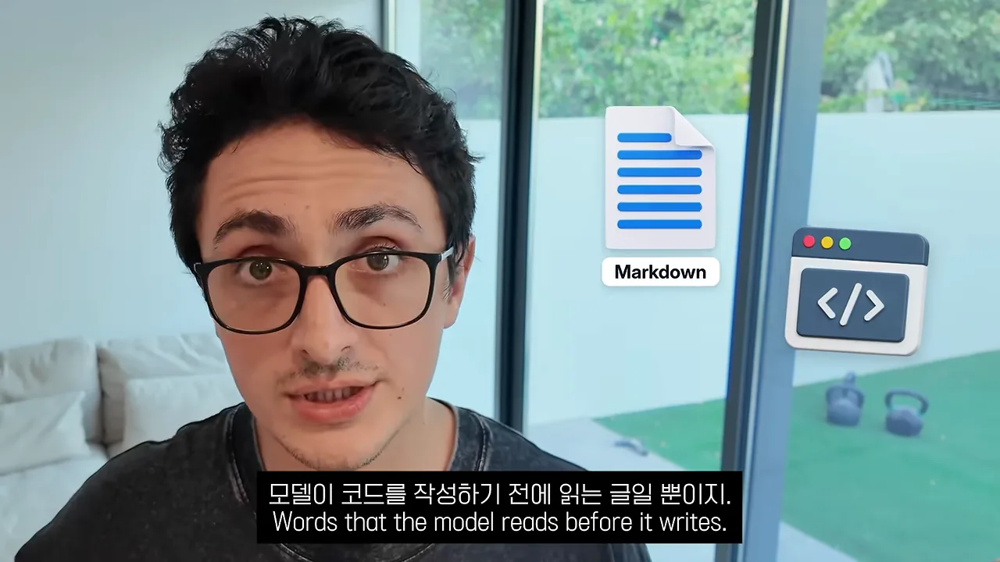
그래서 세 번째는 제안이 아니라 도구예요. anti-slop은 JavaScript와 TypeScript용 린터인 Oxlint에 얹는 규칙 모음이에요. 린터에는 AI가 들어 있지 않아서, 같은 코드에는 늘 같은 지적이 나와요. 규칙도 마음대로 정할 수 있어요. "코드에 console.log 금지" 같은 규칙을 걸면 발견할 때마다 경고해요.
통과할 때까지 돌리기
쓰는 법은 단순해요. 규칙을 설치하고 에이전트에게 lint 명령을 돌리게 해요. 아래 그림 오른쪽 터미널을 보면 $ lint가 세 번 실행돼요. 처음 두 번은 'FAIL', 고친 뒤 세 번째에 'PASS'예요. 그림 아래쪽에는 lint 관문을 문서들이 차례로 지나가는 모습이 있어요.
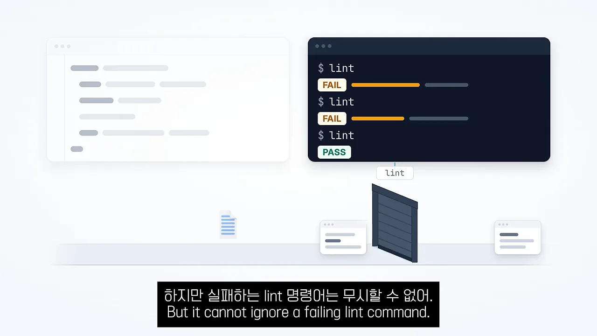
규칙 1: 조건부 객체 스프레드 금지
조건부 객체 스프레드는 AI가 정말 좋아하는 패턴이에요. 아래 코드 2번 줄은 timeout이 있을 때만 객체에 넣으려고 삼항 연산자와 스프레드를 한 줄에 겹쳐 썼어요. 읽는 사람은 괄호를 풀어 가며 '없으면 빈 객체를 펼친다'는 뜻을 거꾸로 해석해야 해요.
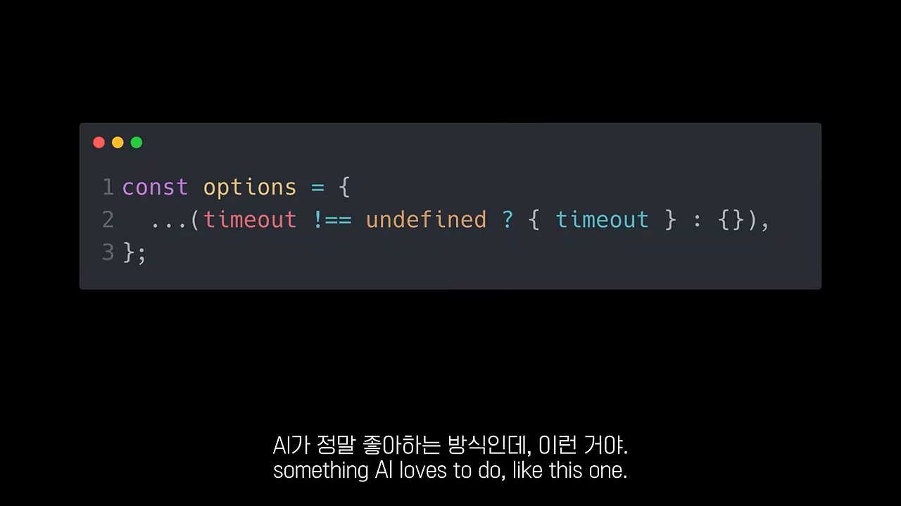
규칙을 켜면 에이전트는 이렇게 다시 써야 해요. 1번 줄에서 options의 모양을 { timeout?: number }로 먼저 밝히고, 2~4번 줄의 평범한 if 문으로 값을 넣어요.
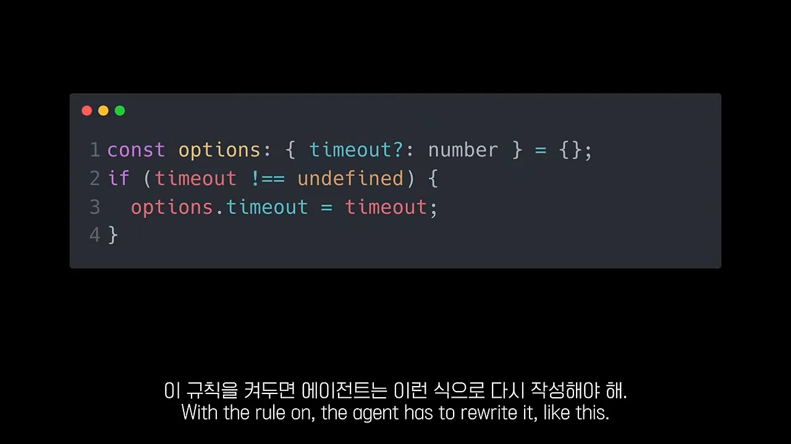
규칙 2: 모호한 매개변수 금지
두 번째 예는 save(value: object)예요. 아래 화면에서 이 함수 밑에 놓인 세 객체를 보세요. 사용자(id, name), 상품(title, price), 설정(theme, locale) 중 무엇이 들어올지 시그니처만 봐서는 알 수 없어요.
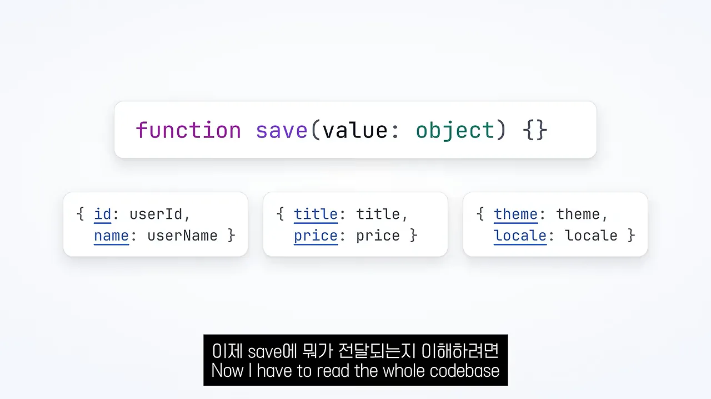
사용자를 저장하는 거라면 그렇다고 써야 해요. 다시 쓴 코드는 1~4번 줄에서 type User를 선언하고, 5번 줄의 매개변수 타입을 User로 바꿨어요.
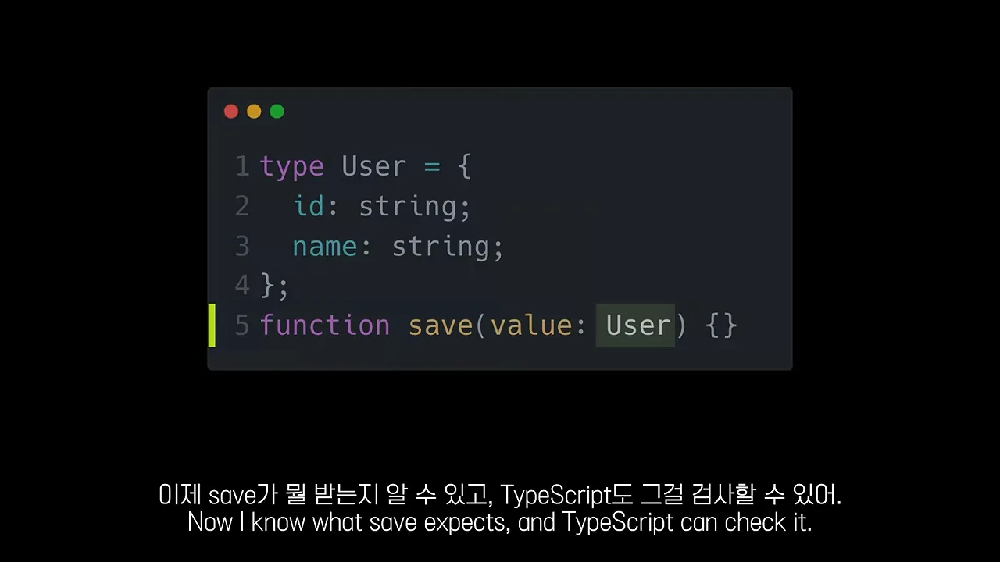
설치와 전제
규칙을 손으로 복사해도 되고, 대신 해 주는 에이전트 스킬을 써도 돼요. 화면의 명령은 이거예요.
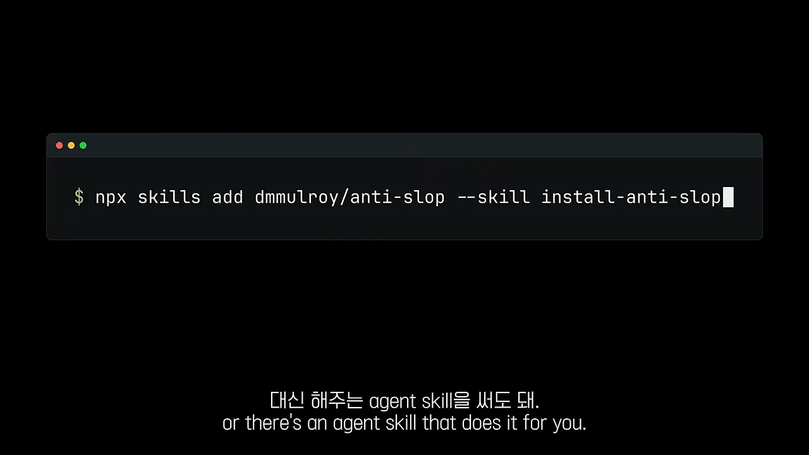
npx skills add dmmulroy/anti-slop --skill install-anti-slop다만 이 규칙들은 만든 사람(Cloudflare 엔지니어)의 취향이에요. 보편적인 표준이 아니라서 팀에 맞게 고쳐 쓰는 게 전제예요. 그래도 장점은 분명해요. "제발 더 깔끔하게 써 줘" 같은 부탁이 필요 없어요. lint는 통과하거나 실패하거나, 둘 중 하나예요.
언어가 판단을 대신하게: Kotlin
발표자는 anti-slop 규칙들을 다시 꺼내 보여 줘요. 아래 화면 위쪽은 save(value: object), 화살표 아래는 type User로 고친 코드예요. 규칙마다 존재 이유가 같아요. AI가 혼자 판단을 내렸고, 우리가 그 결과를 싫어했기 때문이에요. 필드를 어떻게 건너뛸지, 매개변수 타입을 어떻게 쓸지 같은 판단이요.
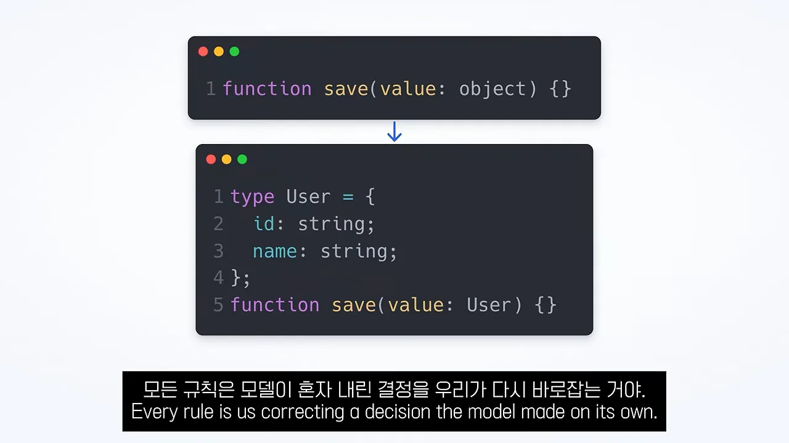
그래서 발표자는 질문을 뒤집어요. AI에게서 더 나은 판단을 끌어내려 애쓰는 대신, 처음에 결정 하나를 내려서 그 뒤의 판단 수백 개를 없애면 어떨까요? AI가 내리지 않은 판단은 리뷰할 필요도 없어요. 에이전트가 코드를 한 줄도 쓰기 전에 내릴 수 있는 그런 결정이 바로 언어 선택이에요.
그룹 짓기: reduce 대 associateBy
AI가 데이터를 묶을 때 가장 좋아하는 방식은 손으로 쓴 reduce예요. 아래 코드는 users 배열을 id별로 묶어요. 2번 줄의 누산기, 3번 줄에서 키를 고르고 값을 넣는 방식, 4번 줄의 반환, 6번 줄의 초깃값과 타입 단언까지 판단이 줄줄이 들어 있어요.
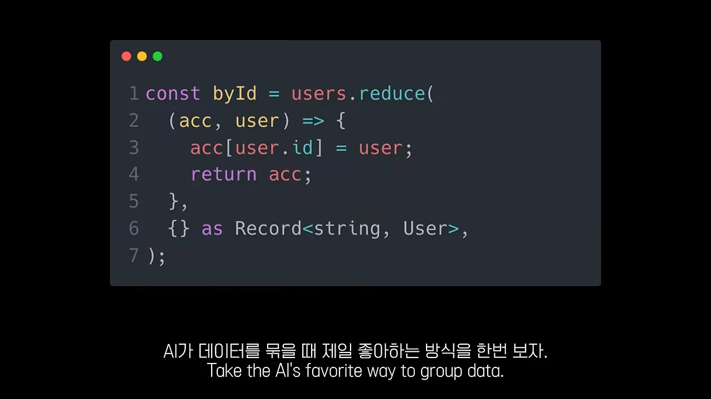
Kotlin에서는 같은 일이 한 줄이에요. 표준 라이브러리에 이미 associateBy라는 이름이 있거든요.
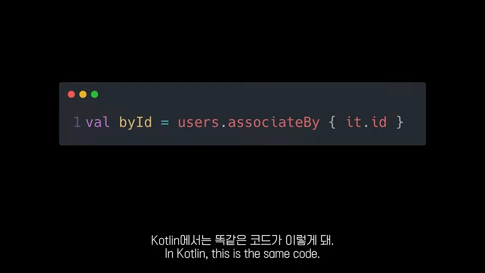
데이터 정의: data class 대 손으로 쓴 헬퍼
더 큰 예도 있어요. Kotlin에서는 데이터를 정의하는 데 아래 한 줄이면 돼요. 이 한 줄에 equality, copy, hashCode, toString이 따라오고, 모두 컴파일러가 만들어요.
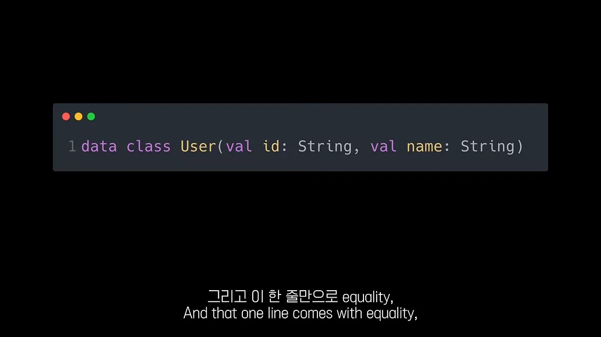
TypeScript에서는 AI가 이런 헬퍼를 손으로 써요. 아래 화면에서 강조된 2~4번 줄 equals는 id와 name을 비교하고, 5~7번 줄 withName은 스프레드로 복사본을 만들어요. 어떤 필드가 같아야 같은 걸로 볼지, 복사가 깊은지 얕은지를 AI가 정했고, 이제 사람이 확인해야 해요.
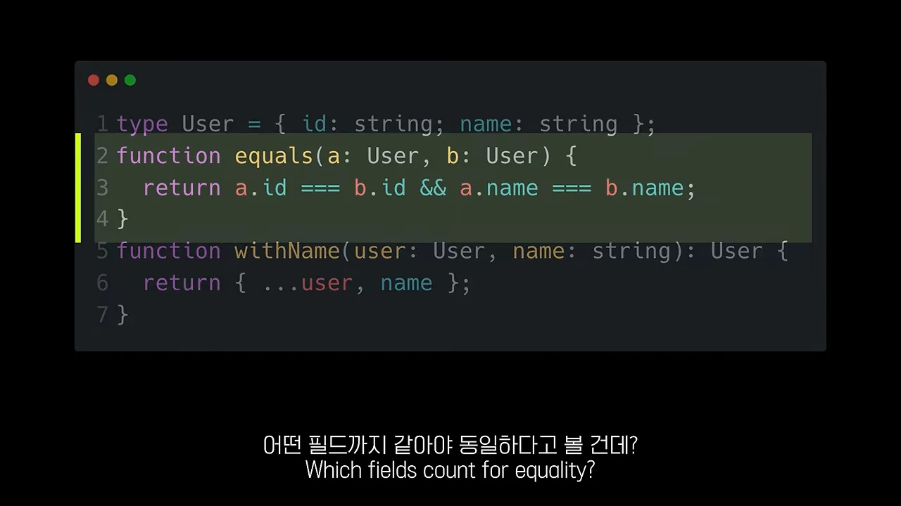
두 예를 나란히 놓으면 이래요. 왼쪽 주황 칸은 AI가 내려야 하는 판단, 오른쪽 초록 칸은 언어나 컴파일러가 대신 정해 주는 부분이에요.
컴파일러는 자기 자신과 늘 같아요
Kotlin에서는 아무도 결정하지 않았어요. 컴파일러가 모든 세션, 모든 코드베이스에서 매번 같은 방식으로 만들었을 뿐이에요. 아래 화면 왼쪽은 compiler 아래 똑같은 모양의 줄 네 개, 오른쪽은 yesterday와 today 카드의 길이가 서로 다른 모습이에요.
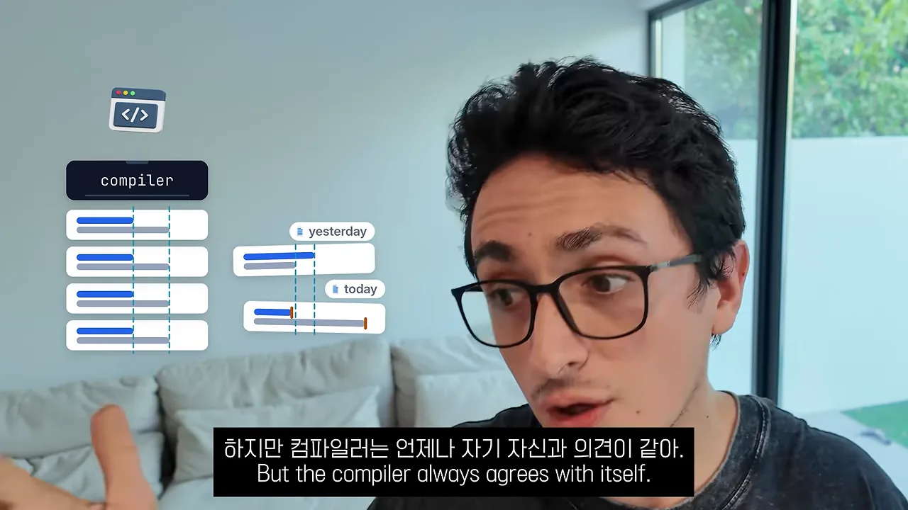
발표자는 공정하게 한계도 말해요. Kotlin이라고 슬롭이 불가능해지진 않아요. 과하게 설계된 Kotlin 코드베이스도 멀쩡히 컴파일돼요. 그래서 앞의 도구들은 여전히 다 써야 해요. 그래도 언어가 AI에게서 가져간 판단 하나하나가 읽지 않아도 되는 줄이 돼요. 매일, 모든 리뷰에서 그게 쌓여요.
'완료'를 믿지 않기: verification-before-completion
발표자는 여기서 한 번 정리해요. Attention Span은 에이전트가 말하는 방식을 고쳐요. Karpathy 파일은 덜 만들라고 말해요. anti-slop은 그래도 새어 나온 것을 잡고, 컴파일러는 언어가 허용하는 범위 안에서 잡아요. 아래 표 그림에서 위 두 줄은 지시문이고, 가운데 두 줄은 통과·실패만 있는 기계 검사예요. 마지막 줄이 이 절의 주제예요.
그래서 끝났을까요? 아니에요. 이 중 어느 것도 가장 중요한 질문, 코드가 실제로 동작하느냐에는 답하지 않아요. 아래 화면 왼쪽 위 lint, types, diff 세 칸에는 모두 체크가 붙어 있어요. 그런데 그 아래 Login 버튼을 누르는 기능은 여전히 망가져 있을 수 있어요.
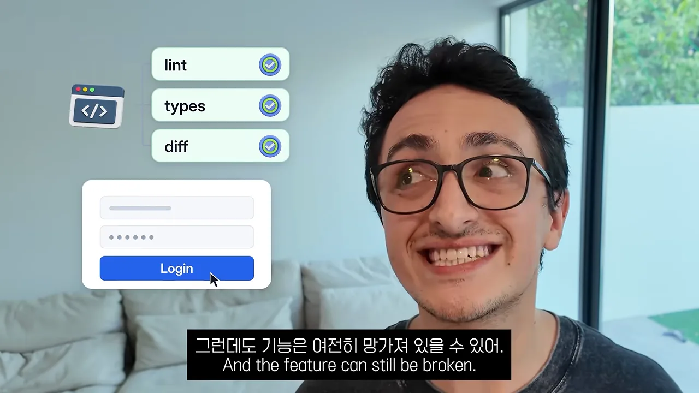
'완료'는 다음에 올 법한 단어였을 뿐
마지막 도구는 에이전트의 어휘에서 단어 하나를 지워요. 바로 "완료"예요. 아래 Claude 대화창에 "Done! Everything should work now."가 떠 있고, 그 아래 Run과 Test 칸은 비어 있어요. 실제로는 아무것도 실행하지 않았다는 뜻이에요.
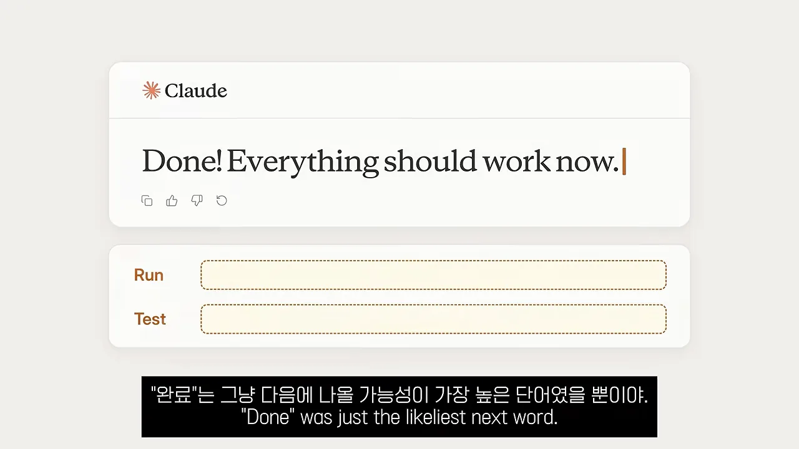
이 도구는 verification-before-completion이라는 스킬이에요. 발표자가 GitHub에서 가장 인기 있는 에이전트 스킬 모음일 거라고 소개한 Superpowers에 들어 있어요. 아래 화면 맨 위에 obra/superpowers 저장소 이름이, 왼쪽에 brainstorming, systematic-debugging, test-driven-development 같은 다른 스킬 폴더가 보여요. 이 스킬 하나만 따로 가져다 써도 돼요.
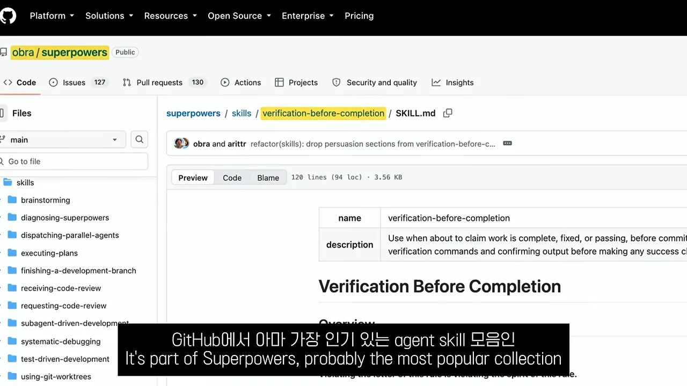
주장보다 증거가 먼저
스킬 전체가 규칙 하나예요. "Evidence before claims, always." 에이전트가 '완료', '고침', '통과'라고 말하려면 먼저 이 순서를 밟아야 해요.
- 이 주장을 증명할 명령이 무엇인지 말해요
- 그 명령을 새로 실행해요 — 기억에 기대지 않아요.
- 전체 출력과 exit code를 읽어요
- 그다음에야 증거를 붙여서 주장해요 — 출력이 주장을 뒷받침하지 않으면 실제 상태를 대신 말해요.
아래 화면이 세 번째 단계예요. 왼쪽 라벨 command, output, exit code가 터미널의 각 부분을 가리키고, 맨 아래 exit code 칸에 0이 찍혀 있어요.
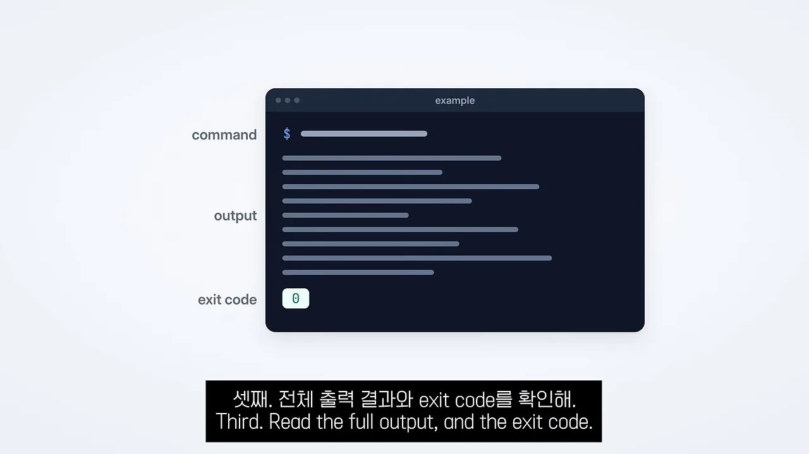
스킬은 얼버무리는 말도 금지해요. 아래 SKILL.md의 Red Flags - STOP 목록 첫 줄에 "should", "probably", "seems to"가 있어요. 노란 형광펜이 칠해진 "should"가 바로 "작동할 거예요"의 그 단어예요.
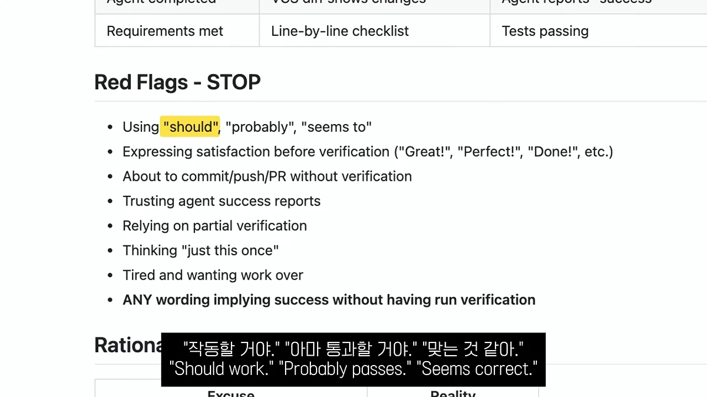
이 스킬을 켜면 답이 이렇게 바뀌어요. 위쪽 흐린 카드는 예전 답 "Done! Everything should work now."이고, 아래 카드에는 초록 체크 34개와 함께 "Ran the test suite. 34 of 34 passing. All tests pass."가 적혀 있어요.
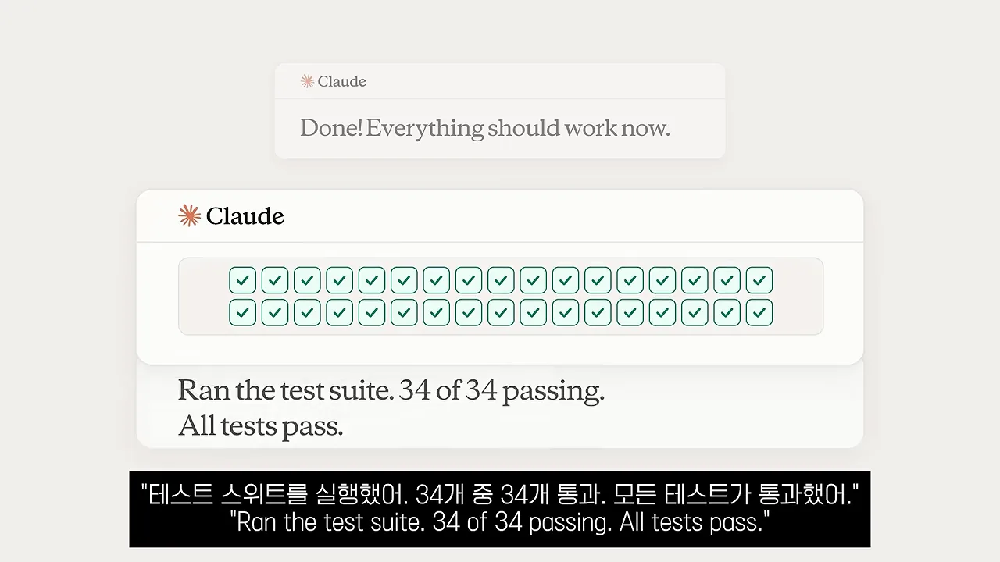
앞에서 본 Karpathy의 조언과 짝을 이뤄요. 에이전트에게 성공 기준을 주고, 그 기준을 실제로 돌려 보기 전에는 성공했다고 말하지 못하게 하는 거예요.
비용은 사라지지 않고 옮겨 갔어요
마무리에서 발표자는 다시 'AI는 더하는 기계'라는 말로 돌아가요. 예전에는 더 많이 써도 괜찮았어요. 쓰는 일이 비쌌으니까요. 아래 첫 그림에서는 동전이 Writing 쪽에 붙어 있고 Reviewing은 흐려요.
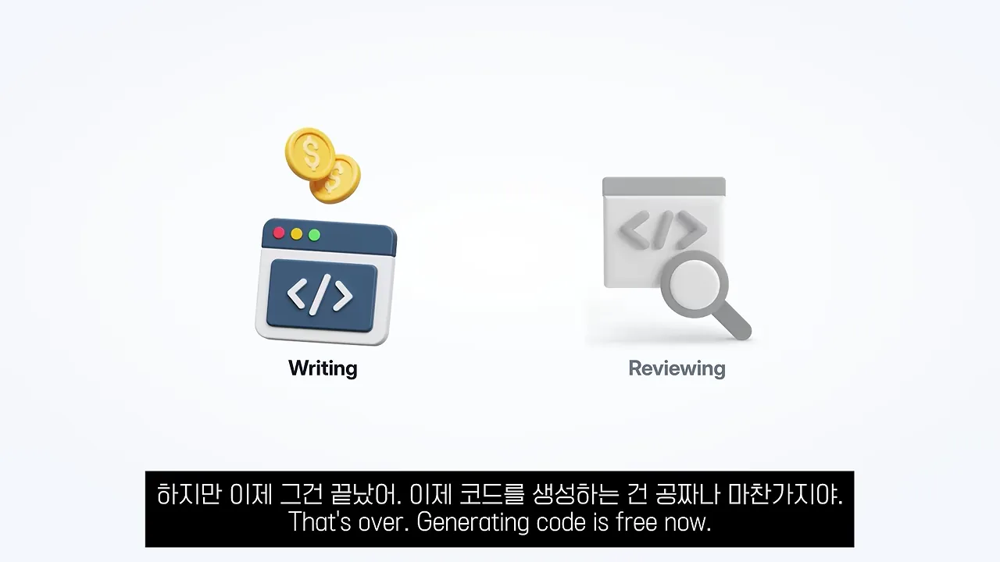
이제 코드 생성은 공짜예요. 두 번째 그림에서는 동전과 Cost 라벨이 Reviewing 쪽으로 넘어가고 Writing이 흐려져요. 읽고, 이해하고, 앞으로 4년 동안 유지보수하는 건 공짜가 아니에요. 그 비용을 내는 사람이 리뷰어, 곧 나예요.
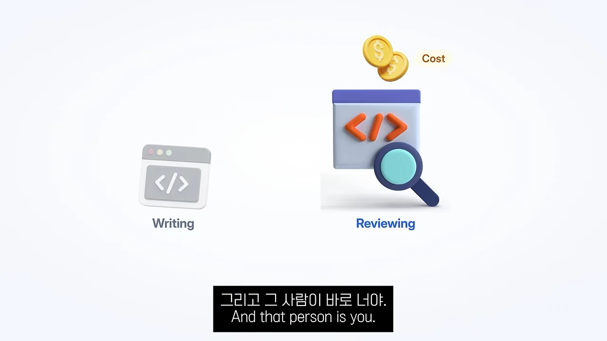
그래서 발표자는 이제 개발자의 일이 코드를 타이핑하는 게 아니라고 말해요. 무엇이 존재할 자격이 있는지 정하는 일이에요. 누군가는 생성된 500줄을 보고 "이 중 30줄이면 돼"라고 말해야 해요.
Not typing codes. Deciding what deserves to exist.
코드를 타이핑하는 게 아니라, 무엇이 존재할 자격이 있는지 정하는 것.
— 영상 09:54